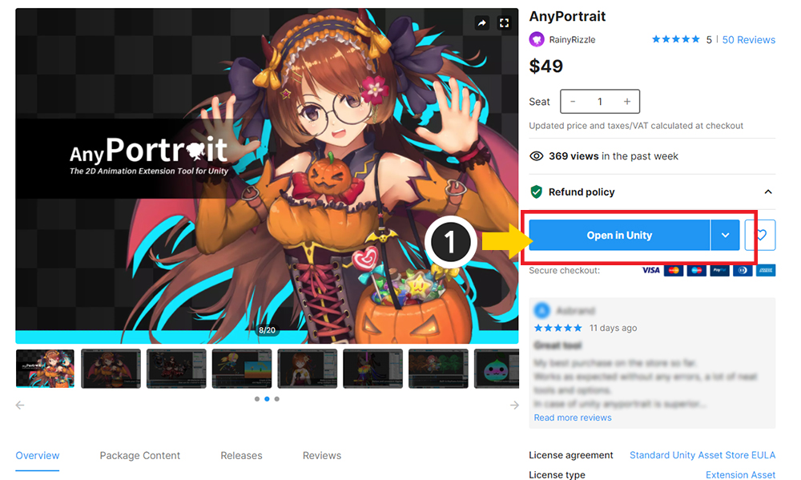

AnyPortrait > Manual > How to Install and Update
How to Install and Update
This page explains how to download assets purchased from the Unity Asset Store and then import them into your project.
Descriptions on this page can apply to any asset, including AnyPortrait.
Asset management methods may differ depending on the Unity version, and this document is based on Unity 2020.1.

If you purchased an asset from the Asset Store, the Buy button should have changed to an "Open in Unity" button.
(1) Click the Open in Unity button to open a Unity project to import assets into.

If the Unity editor is open, open the Package Manager as shown above.
(1) Open Window > Package Manager in Unity Editor.

(1) Change the package category to My Assets.
(2) Select the purchased asset.
(3) If the asset is not visible, click the Refresh button or restart the Unity editor.
You must launch the Unity Editor with the account where you purchased the asset.
(4) The Import button and the Download or Update button appear at the bottom right.
- Import : Imports the downloaded asset into the current project.
- Download : Downloads the asset to the specified location on the user's computer.
- Update : Updates the asset with a newer version than the current version.
If you have not downloaded the asset yet, click the Download or Update button first.
After that, click the Import button.

A dialog will appear asking which of the assets' items you want to import into your project.
For AnyPortrait, all possible should be selected. (You can uncheck the Demo folder.)
(1) After checking the items, click the Import button.

You will see the purchased assets installed in your project.
If the latest version of the asset has been updated, you can import it in the same way.
Check the Update Log of AnyPortrait
Like many other assets, AnyPortrait guides you to see updated changes in a separate menu.

Open the Window > AnyPortrait > Update Log menu in the Unity editor.

You can see changes in the latest version in the Update Log window.
If you change the language in the setting of AnyPortrait editor, you can see the update log in that language.